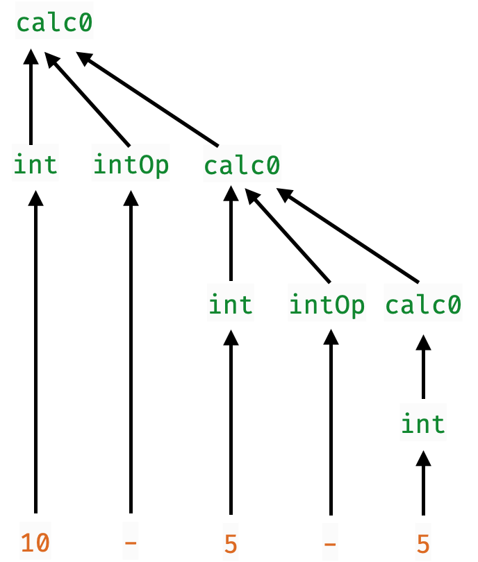

Before we continue …
A Word from the Sponsor!
Don't Fear MonadsThey are just a versatile abstraction, like map or fold.
Parsers
A parser is a function that
- converts unstructured data (e.g.
String, array ofByte,…) - into structured data (e.g. JSON object, Markdown, Video…)
type Parser = String -> StructuredObject
Every large software system contains a Parser
| System | Parses |
|---|---|
| Shell Scripts | Command-line options |
| Browsers | HTML |
| Games | Level descriptors |
| Routers | Packets |
| Netflix | Video |
| Spotify | Audio, Playlists… |
How to build Parsers?
Two standard methods
Regular Expressions
- Doesn’t really scale beyond simple things
- No nesting, recursion
Parser Generators
- Specify grammar via rules
Expr : Var { EVar $1 }
| Num { ENum $1 }
| Expr Op Expr { EBin $1 $2 $3 }
| '(' Expr ')' { $2 }
;- Tools like
yacc,bison,antlr,happy
- convert grammar into executable function
Grammars Don’t Compose!
If we have two kinds of structured objects Thingy and Whatsit.
Thingy : rule { action }
;
Whatsit : rule { action }
;To parse sequences of Thingy and Whatsit we must duplicate the rules
Thingies : Thingy Thingies { ... }
EmptyThingy { ... }
;
Whatsits : Whatsit Whatsits { ... }
EmptyWhatsit { ... }
;No nice way to reuse the sub-parsers for Whatsit and Thingy :-(
A New Hope: Parsers as Functions
Lets think of parsers directly as functions that
- Take as input a
String - Convert a part of the input into a
StructuredObject - Return the remainder unconsumed to be parsed later
data Parser a = P (String -> (a, String))A Parser a
- Converts a prefix of a
String - Into a structured object of type
aand - Returns the suffix
Stringunchanged
Parsers Can Produce Many Results
Sometimes we want to parse a String like
"2 - 3 - 4"into a list of possible results
[(Minus (Minus 2 3) 4), Minus 2 (Minus 3 4)]So we generalize the Parser type to
data Parser a = P (String -> [(a, String)])
EXERCISE
Given the definition
data Parser a = P (String -> [(a, String)])Implement a function
runParser :: Parser a -> String -> [(a, String)]
runParser p s = ???
QUIZ
Given the definition
data Parser a = P (String -> [(a, String)])Which of the following is a valid oneChar :: Parser Char
that returns the first Char from a string (if one exists)
-- A
oneChar = P (\cs -> head cs)
-- B
oneChar = P (\cs -> case cs of
[] -> [('', [])]
c:cs -> [c, cs])
-- C
oneChar = P (\cs -> (head cs, tail cs))
-- D
oneChar = P (\cs -> [(head cs, tail cs)])
-- E
oneChar = P (\cs -> case cs of
[] -> []
cs -> [(head cs, tail cs)])
Lets Run Our First Parser!
>>> runParser oneChar "hey!"
[('h', "ey")]
>>> runParser oneChar "yippee"
[('y', "ippee")]
>>> runParser oneChar ""
[]Failure to parse means result is an empty list!
EXERCISE
Your turn: Write a parser to grab first two chars
twoChar :: Parser (Char, Char)
twoChar = P (\cs -> ???) When you are done, we should get
>>> runParser twoChar "hey!"
[(('h', 'e'), "y!")]
>>> runParser twoChar "h"
[]
QUIZ
Ok, so recall
twoChar :: Parser (Char, Char)
twoChar = P (\cs -> case cs of
c1:c2:cs' -> [((c1, c2), cs')]
_ -> [])Suppose we had some foo such that twoChar' was equivalent to twoChar
twoChar' :: Parser (Char, Char)
twoChar' = foo oneChar oneChar What must the type of foo be?
A. Parser (Char, Char)
B. Parser Char -> Parser (Char, Char)
C. Parser a -> Parser a -> Parser (a, a)
D. Parser a -> Parser b -> Parser (a, b)
E. Parser a -> Parser (a, a)
EXERCISE: A forEach Loop
Lets write a function
forEach :: [a] -> (a -> [b]) -> [b]
forEach xs f = ???such that we get the following behavior
>>> forEach [] (\i -> [i, i + 1])
[]
>>> forEach [10,20,30] (\i -> [show i, show (i+1)])
["10", "11", "20", "21", "30", "31"]
QUIZ
What does quiz evaluate to?
quiz = forEach [10, 20, 30] (\i ->
forEach [0, 1, 2] (\j ->
[i + j]
)
)A. [10,20,30,0,1,2]
B. [10,0,20,1,30,2]
C. [[10,11,12], [20,21,22] [30,31,32]]
D. [10,11,12,20,21,22,30,31,32]
E. [32]
A pairP Combinator
Lets implement the above as pairP
forEach :: [a] -> (a -> [b]) -> [b]
forEach xs f = concatMap f xs
pairP :: Parser a -> Parser b -> Parser (a, b)
pairP aP bP = P (\s -> forEach (runParser aP s) (\(a, s') ->
forEach (runParser bP s') (\(b, s'') ->
((a, b), s'')
)
) Now we can write
twoChar = pairP oneChar oneChar
QUIZ
What does quiz evaluate to?
twoChar = pairP oneChar oneChar
quiz = runParser twoChar "h" A. [((h,h), "")]
B. [(h, "")]
C. [("", "")]
D. []
E. Run-time exception
Does the Parser a type remind you of something?
Lets implement the above as pairP
data Parser a = P (String -> [(a, String)])
data ST s a = S (s -> (a, s))
Parser is a Monad!
Like a state transformer, Parser is a monad!
We need to implement two functions
returnP :: a -> Parser a
bindP :: Parser a -> (a -> Parser b) -> Parser b
QUIZ
Which of the following is a valid implementation of returnP
data Parser a = P (String -> [(a, String)])
returnP :: a -> Parser a
returnP a = P (\s -> []) -- A
returnP a = P (\s -> [(a, s)]) -- B
returnP a = P (\s -> (a, s)) -- C
returnP a = P (\s -> [(a, "")]) -- D
returnP a = P (\s -> [(s, a)]) -- E
HINT: return a should just
- “produce” the parse result
aand - leave the string unconsumed.
Bind
Next, lets implement bindP
- we almost saw it as
pairP
bindP :: Parser a -> (a -> Parser b) -> Parser b
bindP aP fbP = P (\s ->
forEach (runParser aP s) (\(a, s') ->
forEach (runParser (fbP a) s') (\(b, s'') ->
[(b, s'')]
)
)
)The function
- Builds the
avalues out ofaP(usingrunParser) - Builds the
bvalues by callingfbP aon the remainder strings' - Returns
bvalues and the remainder strings''

The Parser Monad
We can now make Parser an instance of Monad
instance Monad Parser where
(>>=) = bindP
return = returnP
And now, let the wild rumpus start!
Parser Combinators
Lets write lots of high-level operators to combine parsers!
Here’s a cleaned up pairP
pairP :: Parser a -> Parser b -> Parser (a, b)
pairP aP bP = do
a <- aP
b <- bP
return (a, b)
Failures are the Pillars of Success!
Surprisingly useful, always fails
- i.e. returns
[]no successful parses
failP :: Parser a
failP = P (\_ -> [])
QUIZ
Consider the parser
satP :: (Char -> Bool) -> Parser Char
satP p = do
c <- oneChar
if p c then return c else failPWhat is the value of
quiz1 = runParser (satP (\c -> c == 'h')) "hellow"
quiz2 = runParser (satP (\c -> c == 'h')) "yellow"quiz1 |
quiz2 |
|
|---|---|---|
| A | [] |
[] |
| B | [('h', "ellow")] |
[('y', "ellow")] |
| C | [('h', "ellow")] |
[] |
| D | [] |
[('y', "ellow")] |
Parsing Alphabets and Numerics
We can now use satP to write
-- parse ONLY the Char c
char :: Parser Char
char c = satP (\c' -> c == c')
-- parse ANY ALPHABET
alphaCharP :: Parser Char
alphaCharP = satP isAlpha
-- parse ANY NUMERIC DIGIT
digitChar :: Parser Char
digitChar = satP isDigit
QUIZ
We can parse a single Int digit
digitInt :: Parser Int
digitInt = do
c <- digitChar -- parse the Char c
return (read [c]) -- convert Char to IntWhat is the result of
quiz1 = runParser digitInt "92"
quiz2 = runParser digitInt "cat"quiz1 |
quiz2 |
|
|---|---|---|
| A | [] |
[] |
| B | [('9', "2")] |
[('c', "at")] |
| C | [(9, "2")] |
[] |
| D | [] |
[('c', "at")] |
EXERCISE
Write a function
strP :: String -> Parser String
strP s = -- parses EXACTLY the String s and nothing elsewhen you are done, we should get the following behavior
>>> dogeP = strP "doge"
>>> runParser dogeP "dogerel"
[("doge", "rel")]
>>> runParser dogeP "doggoneit"
[]
A Choice Combinator
Lets write a combinator orElse p1 p2 such that
- returns the results of
p1
or, else if those are empty
- returns the results of
p2
:: Parser a -> Parser a -> Parser a
orElse p1 p2 = -- produce results of `p1` if non-empty
-- OR-ELSE results of `p2`e.g. orElseP lets us build a parser that produces an alphabet OR a numeric character
alphaNumChar :: Parser Char
alphaNumChar = alphaChar `orElse` digitCharWhich should produce
>>> runParser alphaNumChar "cat"
[('c', "at")]
>>> runParser alphaNumChar "2cat"
[('2', "cat")]
>>> runParser alphaNumChar "230"
[('2', "30")]
QUIZ
orElse :: Parser a -> Parser a -> Parser a
orElse p1 p2 = -- produce results of `p1` if non-empty
-- OR-ELSE results of `p2`Which of the following implements orElse?
-- a
orElse p1 p2 = do
r1s <- p1
r2s <- p2
return (r1s ++ r2s)
-- b
orElse p1 p2 = do
r1s <- p1
case r1s of
[] -> p2
_ -> return r1s
-- c
orElse p1 p2 = P (\cs ->
runParser p1 cs ++ runParser p2 cs
)
-- d
orElse p1 p2 = P (\cs ->
case runParser p1 cs of
[] -> runParser p2 cs
r1s -> r1s
)
An “Operator” for orElse
It will be convenient to have a short “operator” for orElse
p1 <|> p2 = orElse p1 p2
A Simple Expression Parser
Now, lets write a tiny calculator!
-- 1. First, parse the operator
intOp :: Parser (Int -> Int -> Int)
intOp = plus <|> minus <|> times <|> divide
where
plus = do { _ <- char '+'; return (+) }
minus = do { _ <- char '-'; return (-) }
times = do { _ <- char '*'; return (*) }
divide = do { _ <- char '/'; return div }
-- 2. Now parse the expression!
calc :: Parser Int
calc = do x <- digitInt
op <- intOp
y <- digitInt
return (x `op` y)When calc is run, it will both parse and calculate
>>> runParser calc "8/2"
[(4,"")]
>>> runParser calc "8+2cat"
[(10,"cat")]
>>> runParser calc "8/2cat"
[(4,"cat")]
>>> runParser calc "8-2cat"
[(6,"cat")]
>>> runParser calc "8*2cat"
[(16,"cat")]
QUIZ
What will quiz evaluate to?
calc :: Parser Int
calc = do x <- digitInt
op <- intOp
y <- digitInt
return (x `op` y)
quiz = runParser calc "99bottles"A. Type error
B. []
C. [(9, "9bottles")]
D. [(99, "bottles")]
E. Run-time exception
Next: Recursive Parsing
Its cool to parse individual Char …
… but way more interesting to parse recursive structures!
"((2 + 10) * (7 - 4)) * (5 + 2)"
EXERCISE: A “Recursive” String Parser
The parser string s parses exactly the string s - fails otherwise
>>> runParser (string "mic") "mickeyMouse"
[("mic","keyMouse")]
>>> runParser (string "mic") "donald duck"
[]Lets fill in an implementation
string :: String -> Parser String
string s = ???Which library function will eliminate the recursion from string?
QUIZ: Parsing Many Times
Often we want to repeat parsing some object
-- | `manyP p` repeatedly runs `p` to return a list of [a]
manyP :: Parser a -> Parser [a]
manyP p = m0 <|> m1
where
m0 = return []
m1 = do { x <- p; xs <- manyP p; return (x:xs) } Recall digitChar :: Parser Char returned a single numeric Char
What will quiz evaluate to?
quiz = runParser (manyP digitChar) "123horse"A. [("" , "1234horse")]
B. [("1" , "234horse")]
C. [("1", "23horse"), ("12", "3horse"), ("123", "horse )]
D. [("123", "horse")]
E. []
Lets fix manyP!
Run p first and only return [] if it fails …
-- | `manyP p` repeatedly runs `p` to return a list of [a]
manyP :: Parser a -> Parser [a]
manyP p = m1 <|> m0
where
m0 = return []
m1 = do { x <- p; xs <- manyP p; return (x:xs) } now, we can write an Int parser as
int :: Parser Int
int = do { xs <- manyP digitChar; return (read xs) }which will produce
>>> runParser oneChar "123horse"
[("123", "horse")]
>>> runParser int "123horse"
[(123, "horse")]
Parsing Arithmetic Expressions
Now we can build a proper calculator!
calc0 :: Parser Int
calc0 = binExp <|> int
int :: Parser Int
int = do
xs <- many digitChar
return (read xs)
binExp :: Parser Int
binExp = do
x <- int
o <- intOp
y <- calc0
return (x `o` y) Works pretty well!
>>> runParser calc0 "11+22+33"
[(66,"")]
ghci> doParse calc0 "11+22-33"
[(0,"")]
QUIZ
calc0 :: Parser Int
calc0 = binExp <|> int
int :: Parser Int
int = do
xs <- many digitChar
return (read xs)
binExp :: Parser Int
binExp = do
x <- int
o <- intOp
y <- calc0
return (x `o` y) What does quiz evaluate to?
quiz = runParser calc0 "10-5-5"A. [(0, "")]
B. []
C. [(10, "")]
D. [(10, "-5-5")]
E. [(5, "-5")]
Problem: Right-Associativity
Recall
binExp :: Parser Int
binExp = do
x <- int
o <- intOp
y <- calc0
return (x `o` y)"10-5-5" gets parsed as 10 - (5 - 5) because

The calc0 parser implicitly forces each operator to be right associative
doesn’t matter for
+,*but is incorrect for
-
QUIZ
Recall
binExp :: Parser Int
binExp = do
x <- int
o <- intOp
y <- calc0
return (x `o` y)What does quiz get evaluated to?
quiz = runParser calc0 "10*2+100"A. [(1020,"")]
B. [(120,"")]
C. [(120,""), (1020, "")]
D. [(1020,""), (120, "")]
E. []
The calc0 parser implicitly forces all operators to be right associative
doesn’t matter for
+,*but is incorrect for
-
Does not respect precedence!
Simple Fix: Parentheses!
Lets write a combinator that parses something within (...)
parensP :: Parser a -> Parser a
parensP p = do
_ <- char '('
x <- p
_ <- char ')'
return x now we can try
calc1 :: Parser Int
calc1 = parens binExp <|> int
binExp :: Parser Int
binExp = do
x <- int
o <- intOp
y <- calc1
return (x `o` y)now the original string wont even parse
>>> runParser calc1 "10-5-5"
[]but we can add parentheses to get the right result
>>> runParser calc1 "((10-5)-5)"
[(0 ,"")]
>>> runParser calc1 "(10-(5-5))"
[(10 ,"")]
>>> runParser calc1 "((10*2)+100)"
[(120, "")]
>>> runParser calc1 "(10*(2+100))"
[(1020, "")]
Left Associativity
But how to make the parser left associative
- i.e. parse “10-5-5” as
(10 - 5) - 5?
Lets flip the order!
calc1 :: Parser Int
calc1 = binExp <|> oneInt
binExp :: Parser Int
binExp = do
x <- calc1
o <- intOp
y <- int
return (x `o` y)But …
>>> runParser calc1 "2+2"
...Infinite loop! calc1 --> binExp --> calc1 --> binExp --> ...
- without consuming any input :-(
Solution: Parsing with Multiple Levels
Any expression is a sum-of-products
10 * 20 * 30 + 40 * 50 + 60 * 70 * 80
=>
((((10 * 20) * 30) + (40 * 50)) + ((60 * 70) * 80))
=>
((((base * base) * base) + (base * base)) + ((base * base) * base))
=>
(((prod * base) + prod) + (prod * base))
=>
((prod + prod) + prod)
=>
(sum + prod)
=>
sum
=>
expr
Parsing with Multiple Levels
So lets layer our language as
expr :== sum
sum :== (((prod "+" prod) "+" prod) "+" ... "+" prod)
prod :== (((base "*" base) "*" base) "*" ... "*" base)
base :== "(" expr ")" ORELSE intthat is the recursion looks like
expr = sum
sum = oneOrMore prod "+"
prod = oneOrMore base "*"
base = "(" expr ")" <|> int No infinite loop!
expr --> prod --> base -->* exprbut last step
-->*consumes a(
Parsing oneOrMore
Lets implement oneOrMore vP oP as a combinator - vP parses a single a value - oP parses an operator a -> a -> a - oneOrMore vP oP parses and returns the result ((v1 o v2) o v3) o v4) o ... o vn)
But how?
grab the first
v1usingvPcontinue by
- either trying
oPthenv2… and recursively continue withv1 o v2 orElse(no moreo) just returnv1
- either trying
oneOrMore :: Parser a -> Parser (a -> a -> a) -> Parser a
oneOrMore vP oP = do {v1 <- vP; continue v1}
where
continue v1 = do { o <- oP; v2 <- vP; continue (v1 `o` v2) }
<|> return v1
Implementing Layered Parser
Now we can implement the grammar
expr = sum
sum = oneOrMore prod "+"
prod = oneOrMore base "*"
base = "(" expr ")" <|> int simply as
expr = sum
sum = oneOrMore prod addOp
prod = oneOrMore base mulOp
base = parens expr <|> intwhere addOp is + or - and mulOp is * or /
addOp, mulOp :: Parser (Int -> Int -> Int)
addOp = constP "+" (+) <|> constP "-" (-)
mulOp = constP "*" (*) <|> constP "/" div
constP :: String -> a -> Parser a
constP s x = do { _ <- string s; return x }Lets make sure it works!
>>> doParse sumE2 "10-1-1"
[(8,"")]
>>> doParse sumE2 "10*2+1"
[(21,"")]
>>> doParse sumE2 "10+2*1"
[(12,"")]
Parser combinators
That was a taste of Parser Combinators
- Transferred from Haskell to many other languages.
Many libraries including Parsec used in your homework - oneOrMore is called chainl
Read more about the theory - in these recent papers
Read more about the practice - in this recent post that I like JSON parsing from scratch